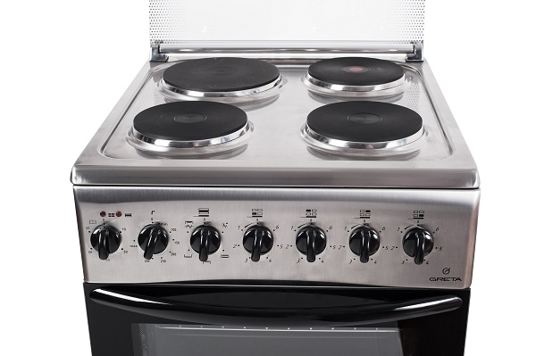
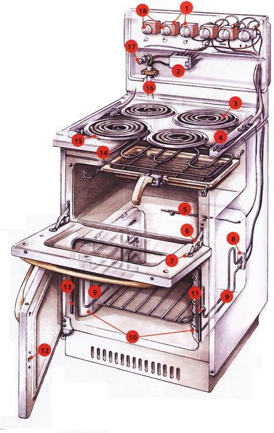

Изображение установки

Структура установки
Ролик установки
Расшифруем обозначения: регулятор мощности; 1. регулятор мощности; 2. клеммная коробка; 3. конфорка; 4. опорная планка; 5. датчик температуры духовки; 6. петля; 7. стопор; 8. держатель тэна духовки; 9. тэн духовки; 10. внутренняя облицовочная панель; 11. фиксатор защелки дверцы; 12. гнездо защелки; 13. изолирующая прокладка; 14. тэн для гриля; 15. ободок конфорки; 16. шнур электропитания; 17. земляная клемма; 18. регулировочные ручки.
ПОРЯДОК ВЫПОЛНЕНИЯ РАБОТЫ
- Ознакомиться с элементами установки «Электроплита»
- Включить одну из комфорок на плите при помощи регулятора мощности на необходимую мощность
- Поставить на комфорку сковородку
- Подождать заданное количество времени для нагрева сковородки от электроплиты
- Выложить необходимый продукт для жарки
- Подождать необходимое количество времени до полного приготовления
- Выключить установку «Электроплита».
- Дождаться полного остывания комфорки